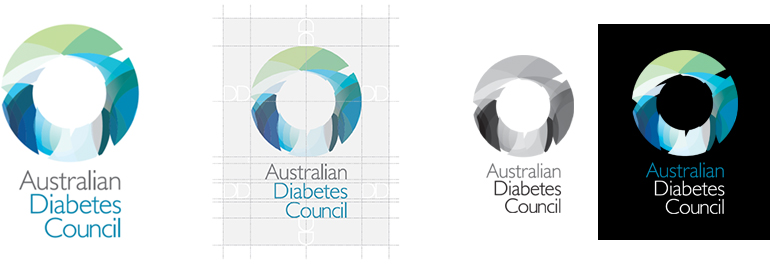
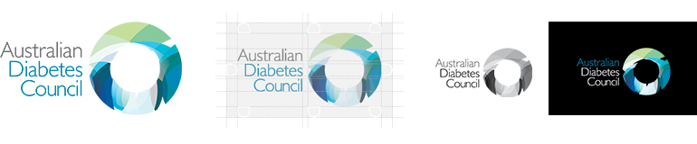

Logos
Usage
An instantly recognisable symbol of Australian Diabetes Council, the brandmark is the most visible asset of the brand, therefore it is crucial to reproduce the logo correctly and consistently. This mark should be used on all approved Australian Diabetes Council materials, internal and external.
To ensure brand consistency and integrity, it should always adhere to the guidelines outlined in the following pages of this style guide.
ADC Brand Logo List
Stacked Logo

The Brandmark
The primary signature should always be the first option for any material requiring the Australian Diabetes Council branding.
Clear Space
To maintain visual clarity and to provide maximum impact, the brandmark must never appear to be linked to or crowded by copy, photographs or graphic elements. The clear space for the primary Australian Diabetes Council brandmark is DD as shown in the diagram above.
Colourways
Where possible, the Australian Diabetes Council brandmark must always be reproduced in CMYK, preferably on a white background.
However, where this is not possible, the greyscale and reversed versions may be utilised.
Minimum Size
To protect the integrity, legibility and impact of the primary Australian Diabetes Council brandmark, it must never be reproduced in sizes smaller than 20mm high, in any medium.
Inline Logo

The Brandmark
The secondary, inline expression of the Australian Diabetes Council brandmark should only be used where the design or space does not allow for the use of the primary, stacked version.
Clear Space
To maintain visual clarity and to provide maximum impact, the brandmark must never appear to be linked to or crowded by copy, photographs or graphic elements. The clear space for the secondary Australian Diabetes Council brandmark is D as shown in the diagram above.
Colourways
Where possible, the Australian Diabetes Council brandmark must always be reproduced in CMYK, preferably on a white background.
However, where this is not possible, the greyscale and reversed versions may be utilised.
Minimum Size
To protect the integrity, legibility and impact of the primary Australian Diabetes Council brandmark, it must never be reproduced in sizes smaller than 20mm wide, in any medium.
Our Positioning Line
The Brandmark
The Australian Diabetes Council positioning line captures the promise of our organisation. It is distinctive, authentic and encourages an emotional connection with our brand. It needs to be highly visible on all communications.
Colourways
Where possible, the Australian Diabetes Council brandmark must always be reproduced in CMYK, preferably on a white background.
However, where this is not possible, the greyscale and reversed versions may be utilised as seen above.
Specialty Logos
|
75 Year Anniversary
The specialty 75th Year Anniversary logo may be used throughout the year 2013 in place of the standard inline logo. All spacing, colourways and minimum size requirements still apply.
|